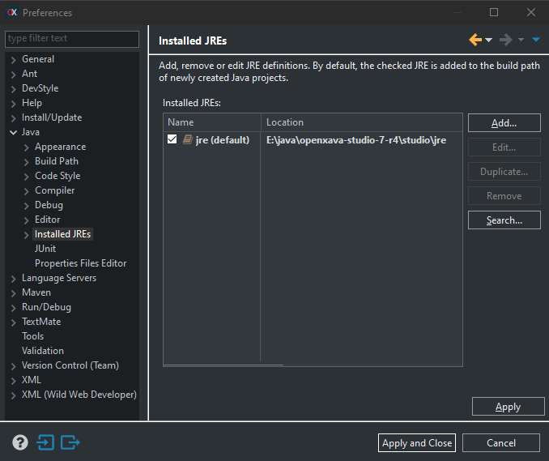
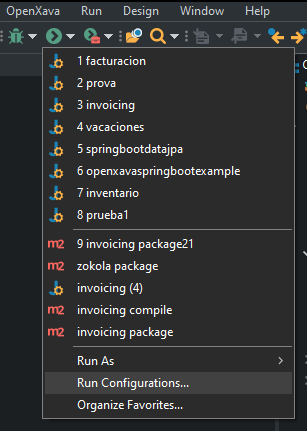
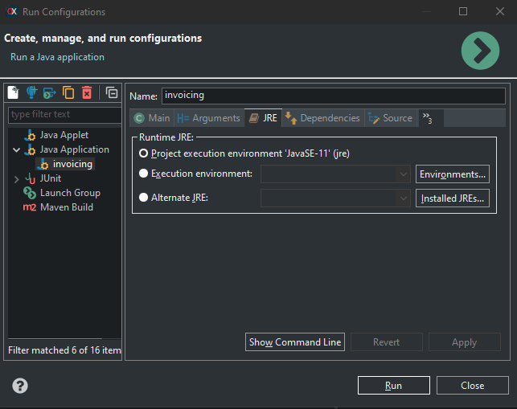
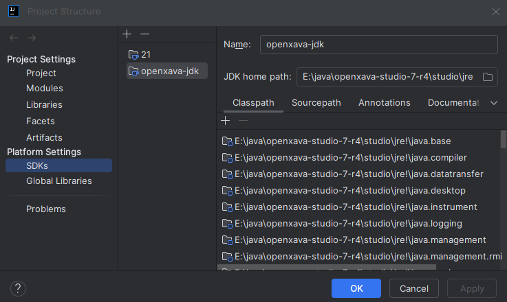
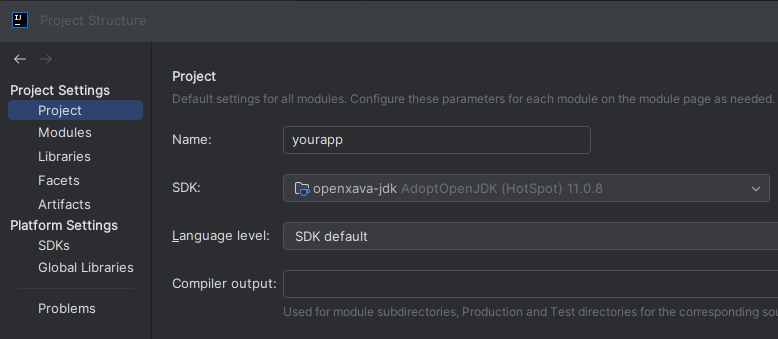

This document covers hot code reloading for the now discontinued OpenXava Studio and for Java 11. If you are using IntelliJ or a modern Java version (17, 21 or 25), please refer to the current documentation: Hot code reloading.
HOTSWAP AGENT: 13:40:23.126 INFO (org.hotswap.agent.HotswapAgent) - Loading Hotswap agent {1.4.1} - unlimited runtime class redefinition.
Starting HotswapAgent '/home/theuser/openxava-studio-7-r4/studio/jre/lib/hotswap/hotswap-agent.jar'

<properties>
...
<maven.compiler.source>1.8</maven.compiler.source>
<maven.compiler.target>1.8</maven.compiler.target>
</properties>
<properties>
...
<maven.compiler.source>11</maven.compiler.source>
<maven.compiler.target>11</maven.compiler.target>
</properties>


You can also enjoy hot code reloading using IntelliJ. The trick is to run the application with the JDK included in OpenXava Studio 7 R4. You'll need to download OpenXava Studio, even if it's just to use its JDK.
Register the JDK included in OpenXava Studio 7 R4 in your IntelliJ. Go to File > Project Structure. There in the SDKs section add the JDK found in openxava-studio-7-r4/studio/jre:

Then in the Project section, choose this JDK as the SDK for the project:

Keep in mind that IntelliJ does not compile the code automatically when the application is running, so after changing the code you have to press the Build button, the one with the little hammer, for it to compile and be able to see the updated changes.
To use hot code reloading with Visual Studio Code you need to run the application with the JDK included
in OpenXava Studio 7 R4, so you'll need to download OpenXava Studio, even if it's just to use its JDK.
For Visual Studio Code to recognize your JDK add this to your user's settings.json:
"java.configuration.runtimes": [
{
"name": "JavaSE-11",
"path": "/home/youruser/openxava-studio-7-r4/studio/jre",
"default": true
}
]
Visual Studio Code compiles the code automatically as you edit it, just like OpenXava Studio, so you just have to touch the code and go to the browser to see the application changed immediately.